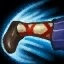
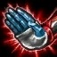
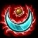

Pasiva: Rafaga
Después de que Lee Sin use una habilidad, sus 2 ataques básicos siguientes reciben una bonificación del 40% de la velocidad de ataque y restablecen 20/10 de Energía.

Q: Onda Sonica/Golpe Resonante
Onda Sónica: Lee Sin proyecta una onda sonora discordante para localizar a sus enemigos, que inflige daño físico al primer enemigo que encuentra. Si Onda Sónica alcanza a un enemigo, Lee Sin puede usar Golpe Resonante durante los 3 segundos siguientes.

Golpe Resonante: Lee Sin corre hacia el enemigo alcanzado por Onda Sónica, al que inflige daño físico más un 8% de la Vida que haya perdido.
W: Salvaguarda/Voluntad de Hierro
Salvaguarda: Lee Sin se lanza hacia un aliado y genera un escudo que lo protege del daño. Si el aliado es un campeón, también recibe el escudo. Tras utilizar Salvaguarda, Lee Sin puede usar Voluntad de Hierro durante los 3 segundos siguientes.

Voluntad de Hierro: El intenso adiestramiento de Lee Sin le permite prosperar en la batalla. Obtiene Robo de Vida y Vampirismo de Hechizo durante 4 segundos.
E: Tempestad/Incapacitar
Tempestad: Lee Sin golpea el suelo, provocando una onda de choque que inflige daño mágico y revela a las unidades enemigas alcanzadas. Si Tempestad impacta contra un enemigo, Lee Sin puede lanzar Incapacitar durante los 3 segundos siguientes.
Incapacitar: Lee Sin incapacita a los enemigos cercanos dañados por Tempestad, reduciendo su velocidad de movimiento durante 4 segundos. La velocidad de movimiento se va recuperando gradualmente mientras dura el efecto.
R: Furia del Dragón
Lee Sin realiza una potente patada giratoria, que lanza hacia atrás al objetivo e inflige daño físico a él y a todos los enemigos con los que impacte. Estos últimos salen por los aires durante un breve tiempo. Esta técnica se la enseñó Jesse Perring, aunque Lee Sin no patea a los jugadores fuera del mapa.